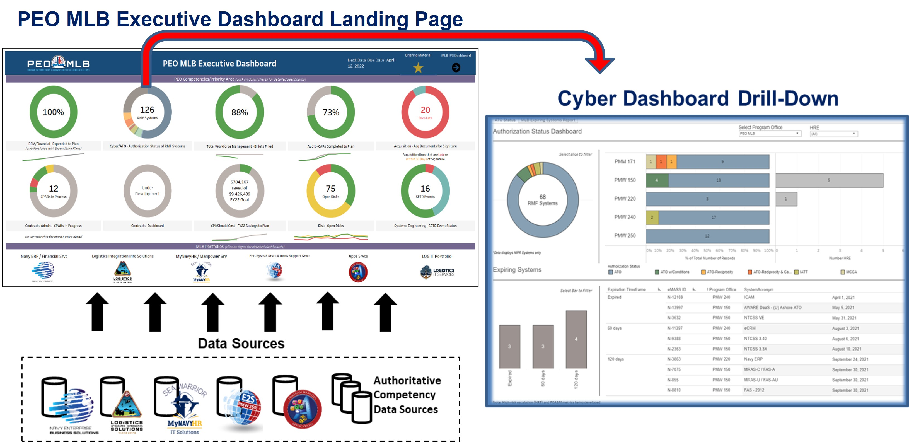
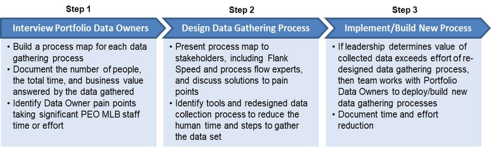

Welcome to the Information Intelligence
PEO-MLB Executive Dashboard Landing Page!
« Dats Home Page
Executive Dashboard Background
The PEO MLB Executive Dashboards were created to improve PEO reporting and analysis
- Previous reporting material:
- PowerPoint briefs of 80-100 slides, with inputs provided monthly by 14 Front Office and Portfolio teams across the PEO
- Lack of standardized visuals and metrics created confusion
Executive Dashboard Technical Achievements
- Identified metrics based on PEO and leadership priorities (e.g., plan vs. actuals evaluation)
- Reduced FTE time to create comparable reports
- Standardized metrics across time periods to enable trend analysis, improving value to leadership
- Developed eight dashboards in first year, TEN more in second year for MLB cross-functional areas and Portfolios
Delivering the Executive Dashboard

Increased team participation, integration, and collaboration (internal and external)
Optimized time and resources – less time spent developing PowerPoints and Excel files
Centralized data for more agile decision-making
Reinforces results-oriented culture
Data Gathering and Re-engineering Project
The DaTS Information Intelligence dashboard team is collaborating with PEO MLB Portfolio Dashboard Data Owners to improve dashboard efficiency by:
- Mapping current data collection processes and identifying end-user pain points
- Identifying better data collection pipelines through automation and Flank Speed capabilities
- Redesigning dashboards and developing metrics by capturing new requirements and measuring business value

Process Improvement Goals
Primary Goal: Improve data collection process for Portfolio dashboards that eliminate bottlenecks and make processes scalable for future dashboard enhancements
- Document individual steps in current data collection processes in process maps identifying manual steps and staff pain points
- Identify opportunities to automate, increase efficiency, and add business value to metrics
Secondary Goal: Conduct a Value-Effort analysis on each of the data sources being collected
- Identify business questions being answered by the authoritative data sources and the business value that the data provides to leadership
- Prioritize automation and process refinement based on the business value and effort required to collect the data
- Measure the new data collection processes and the time saved
Executive Dashboard Next Steps
Complete Data Gathering Re-Engineering Effort
- Will optimize Portfolio data pipelines and establish data collection solutions that can be reused for other existing or future dashboards
Integrated Portfolio Schedule (IPS)
- IPS dashboard will be first view of PEO MLB Portfolio key milestones with interdependencies across Portfolio schedules
- Executive level dashboard to report on schedules in one centralized location shared internally and externally
Tableau Jupiter Pilot
- Participating in pilot of Tableau data visualization software in the Jupiter environment (planned start end of FY22)
- Use case: PEO MLB collaborating with NAVWAR 52400 Cyber Security Technical Authority to build Navy-wide eMASS dashboard of systems’ ATO status
Strategy Level Dashboards
- Expanding dashboard beyond execution level to include dashboards on PEO MLB’s Strategic Plan and progress to strategic objectives
- Run, Grow, Transform dashboard in development backlog
© PEO MLB Data Transformation Services